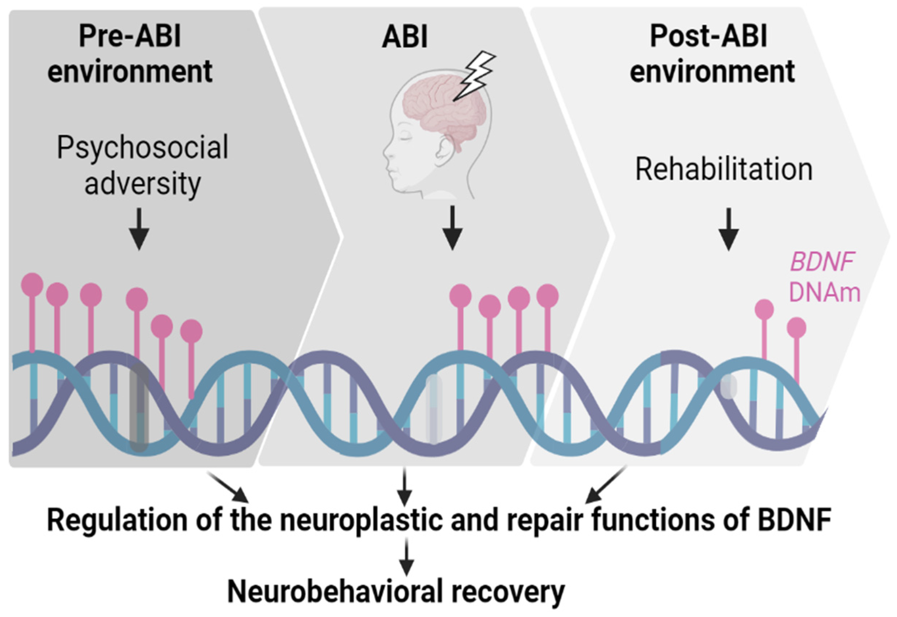

The EETR Study

Epigenetic Effects on Pediatric Traumatic Brain Injury Recovery
Overview
EETR is an observational, prospective, longitudinal concurrent cohort study of children aged 3-18 years with either TBI or orthopedic injury, recruited from the UPMC Children’s Hospital of Pittsburgh. Participants complete study visits acutely and at 6 and 12 months post-injury.
Genomic data
- BDNF DNA methylation
- Genome-wide DNA methylation
- BDNF expression data
Eligibility
Children aged 3-18 years with either TBI or orthopedic injury and no history of neurological disorder.
Study Dates
2017 - present
Ethics
The study received ethics approval from the University of Pittsburgh Institutional Review Board. Participants and their parents provide informed consent/assent.
Assessments
EETR data collection is conducted at three time points: acute (prior to hospital discharge) and chronic (at 6 and 12 months post-injury) during outpatient follow-up visits at CHP. Extensive phenotypic data collection broadly included hypothesized predictors of neurobehavioral recovery, neurobehavioral outcomes, and potential confounders/covariates related to epignetics or neurobehvaioral recovery.
Team
Amery Treble-Barna (PI); Lacey Heinsberg, Dan Weeks, Yvette Conley, Pat Kochanek, Keith Yeates (Co-Is)